Vardaan Learning Institute
Class 12 Mathematics • Comprehensive Chapter Notes
🌐 vardaanlearning.com📞 9508841336
Chapter 1: Relations and Functions
Syllabus Reference: NCERT Class 12 | RD Sharma Vol. 1 | RS Aggarwal | KC Sinha |
Board Level + JEE Mains Level
Dear Student 💡
Welcome to the most foundational chapter of Class 12 Mathematics. This
chapter is a direct extension of sets and relations from Class 11 — but now we go much deeper. It lays
the groundwork for Calculus, Matrices, and all of higher mathematics. In Board exams, you will be asked
to prove equivalence relations, verify types of functions, find inverses, and solve binary
operations. In JEE Mains, you will additionally deal with counting functions,
piecewise composition, and anti-symmetry. Pay attention to every definition — precision
matters here!
Quick Navigation
📚 Detailed Table of Contents — Relations and Functions
0. Class 11 Quick Revision (Basics of Sets)
Before diving into Relations and Functions, it is crucial to recall the basic terminology of Sets from Class 11.
0.1 Sets and Subsets
- Set: A well-defined collection of distinct objects. Often denoted by capital letters $A, B, C$.
- Subset ($\subseteq$): Set $A$ is a subset of $B$ if every element of $A$ is also in $B$. The empty set $\phi$ is a subset of every set.
- Number of Subsets: If a set has $n$ elements, it has exactly $2^n$ subsets.
0.2 Operations on Sets
Key Set Operations
- Union ($A \cup B$): Elements that belong to $A$ OR $B$ (or both).
- Intersection ($A \cap B$): Elements that belong to BOTH $A$ AND $B$.
- Difference ($A - B$): Elements that belong to $A$ but NOT $B$.
- Complement ($A'$ or $A^c$): Elements in the Universal Set $U$ that are not in $A$.
1. Cartesian Product & Basics of Relations
1.1 Cartesian Product (Quick Revision)
For two non-empty sets $A$ and $B$, the Cartesian Product is defined as:
$$ A \times B = \{ (a, b) \mid a \in A \text{ and } b \in B \} $$
- If $n(A) = p$ and $n(B) = q$, then $n(A \times B) = p \times q$.
- $A \times B \neq B \times A$ (in general), but $n(A \times B) = n(B \times A)$.
- $A \times \phi = \phi$ (Cartesian product with an empty set is empty).
- If $A = B$, then $A \times A = A^2$ is called the Cartesian Square of $A$.
1.2 What is a Relation?
Definition: Relation
A Relation $R$ from a non-empty set $A$ to a non-empty set $B$ is any subset of
the Cartesian product $A \times B$.
$$ R \subseteq A \times B $$
- Domain of $R$: Set of all first elements (inputs) of ordered pairs in $R$.
$\text{Dom}(R) = \{ a : (a,b) \in R \}$
- Range of $R$: Set of all second elements (outputs) of ordered pairs in $R$.
$\text{Range}(R) = \{ b : (a,b) \in R \}$
- Co-domain: The entire set $B$. Note: $\text{Range} \subseteq \text{Co-domain}$.
- Total number of possible Relations from $A$ to $B$: $2^{pq}$ (since each subset of
$A \times B$ is a valid relation).
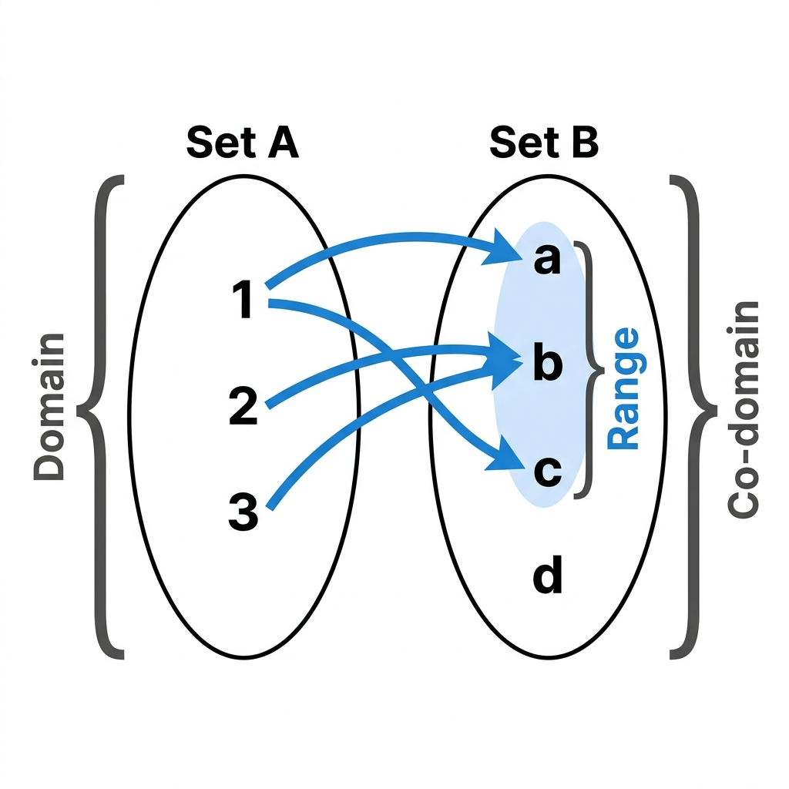
Fig 1.1 — Arrow diagram of a
Relation: showing Domain, Range, and Co-domain of R ⊆ A × B
Practice Problem 1 — NCERT Type
Q: Let $A = \{1, 2, 3\}$ and $B = \{a, b\}$. Find the total number of possible relations
from $A$ to $B$. If $R = \{(1, a), (2, b), (3, a)\}$, write its Domain and Range.
Solution:
$n(A) = 3,\; n(B) = 2 \implies n(A \times B) = 6$.
Total relations $= 2^6 = \mathbf{64}$.
For $R = \{(1,a),(2,b),(3,a)\}$: Domain $= \{1,2,3\}$,
Range $= \{a,b\}$.
Practice Problem 1B — JEE Main 2019 Focus
Q: Let $\mathbb{Z}$ be the set of integers. If $A = \{x \in \mathbb{Z} : 2^{(x+2)(x^2 - 5x + 6)} = 1\}$ and $B = \{x \in \mathbb{Z} : -3 < 2x - 1 < 9\}$, then find the total number of subsets of the Cartesian product $A \times B$.
Solution:
Step 1: Solve for Set A
Given: $2^{(x+2)(x^2 - 5x + 6)} = 1$
Since $2^0 = 1$, the exponent must be zero:
$$(x+2)(x^2 - 5x + 6) = 0$$
Factorizing the quadratic expression $x^2 - 5x + 6 = (x-2)(x-3)$:
$$(x+2)(x-2)(x-3) = 0 \implies x = -2, 2, 3$$
Since all these are integers, Set A $= \{-2, 2, 3\}$, and its cardinality is $n(A) = 3$.
Step 2: Solve for Set B
Given: $-3 < 2x - 1 < 9$
Add 1 to all sides:
$$-2 < 2x < 10$$
Divide by 2:
$$-1 < x < 5$$
Since $x$ must be an integer ($x \in \mathbb{Z}$), we list the values between $-1$ and $5$ (excluding endpoints):
Set B $= \{0, 1, 2, 3, 4\}$, and its cardinality is $n(B) = 5$.
Step 3: Find subsets of $A \times B$
The number of elements in the Cartesian Product $A \times B$ is:
$$n(A \times B) = n(A) \cdot n(B) = 3 \times 5 = 15$$
Therefore, the total number of subsets of the set $A \times B$ is:
$$2^{n(A \times B)} = 2^{15} = \mathbf{32,768}$$
2. Types of Relations on a Set
When we talk about "types of relations" in Class 12, we almost always mean a relation defined on a
single set $A$, i.e., $R \subseteq A \times A$.
2.1 Special Relations: Empty, Universal, Identity
| Relation |
Definition |
Example (A = {1,2,3}) |
| Empty / Void |
$R = \phi$. No element is related to any element. |
$R = \{\}$ |
| Universal |
$R = A \times A$. Every element is related to every element. |
$R = \{(1,1),(1,2),\ldots,(3,3)\}$ — 9 pairs |
| Identity ($I_A$) |
$R = \{(a,a) : a \in A\}$. Each element is related only to itself. |
$R = \{(1,1),(2,2),(3,3)\}$ |
⚠️ Common Confusion: Identity vs Reflexive
- An Identity Relation allows ONLY the pairs $(a,a)$ — nothing else.
- A Reflexive Relation MUST contain all $(a,a)$ pairs, but can also have additional
pairs like $(a,b)$ where $a \neq b$.
- Therefore: Every Identity relation is Reflexive, but not every Reflexive relation is an
Identity relation.
- Also note: The Empty Relation and the Universal Relation on a set
are BOTH reflexive and transitive. The empty relation is symmetric; the universal relation
is also symmetric. So both the Empty and Universal relations are equivalence relations.
2.2 The Big Three Properties
Reflexive, Symmetric, Transitive — Formal Definitions
Let $R$ be a relation on a non-empty set $A$.
① Reflexive: $R$ is reflexive if $(a, a) \in R$ for every $a \in A$.
Symbolically: $\forall\, a \in A,\; aRa$.
② Symmetric: $R$ is symmetric if $(a, b) \in R \implies (b, a) \in R$ for all $a, b \in
A$.
Symbolically: $aRb \implies bRa$.
③ Transitive: $R$ is transitive if $(a, b) \in R$ and $(b, c) \in R$ implies $(a, c) \in R$
for all $a, b, c \in A$.
Symbolically: $aRb$ and $bRc \implies aRc$.
2.3 Anti-Symmetric Relation (JEE Focus)
Anti-Symmetric Relation
A relation $R$ on $A$ is Anti-Symmetric if:
$$ (a, b) \in R \text{ and } (b, a) \in R \implies a = b $$
In other words, if two distinct elements $a \neq b$ are such that $(a,b) \in R$, then $(b,a)$ cannot be in
$R$.
Key Point: Anti-symmetric does NOT mean "not symmetric." A relation can be both symmetric
and anti-symmetric only if it contains only pairs of the form $(a, a)$.
Classic Example: The relation $\leq$ (less than or equal to) on $\mathbb{R}$ is
anti-symmetric: if $a \leq b$ and $b \leq a$, then $a = b$.
2.4 Checking Reflexive, Symmetric, Transitive - A Step-by-Step Method
- Reflexive Check: Write down every element of $A$. Check if $(a, a)$ is in $R$ for ALL
of them. If even one is missing, not reflexive.
- Symmetric Check: For every pair $(a, b) \in R$ where $a \neq b$, check if $(b, a)$ is
also in $R$. If any such pair is missing, not symmetric.
- Transitive Check: For every pair of pairs $(a,b)$ and $(b,c)$ in $R$, check that
$(a,c)$ is also in $R$. If not, not transitive.
🔑 Vacuous Truth — Critical for Transitive & Symmetric (RD Sharma Tip)
- For Transitivity: If $(a,b) \in R$ but there is NO pair $(b, c)$ in $R$ (for any
$c$), then the transitive condition is vacuously satisfied for that pair. The relation is
still transitive.
- For Symmetry: If $R = \phi$ (empty relation), it is vacuously symmetric (no pair
exists to violate symmetry) and also vacuously transitive.
- Conclusion: The empty relation on any set is reflexive only if $A = \phi$ itself.
On a non-empty set, the empty relation is not reflexive (since $(a,a)$ is missing), but it
IS symmetric and transitive.
Practice Problem 2 — NCERT / Board Level
Q: Let $A = \{1, 2, 3, 4, 5, 6\}$, $R = \{(a, b) : b = a + 1\}$. Check if $R$ is reflexive,
symmetric, or transitive.
Roster form: $R = \{(1,2),(2,3),(3,4),(4,5),(5,6)\}$
① Reflexive: $(1,1) \notin R$ → Not Reflexive.
② Symmetric: $(1,2) \in R$ but $(2,1) \notin R$ → Not Symmetric.
③ Transitive: $(1,2) \in R$ and $(2,3) \in R$, but $(1,3) \notin R$ → Not
Transitive.
Conclusion: $R$ is none of the three.
Practice Problem 2B — JEE Main 2005 Focus
Q: Let $R = \{(3, 3), (6, 6), (9, 9), (12, 12), (6, 12), (3, 9), (3, 12), (3, 6)\}$ be a relation on the set $A = \{3, 6, 9, 12\}$. Show that $R$ is reflexive and transitive but not symmetric.
Solution:
① Reflexive:
For a relation to be reflexive, $(a, a) \in R$ for all $a \in A$.
Since $(3,3), (6,6), (9,9), (12,12)$ are all elements of $R$, the relation is Reflexive. ✓
② Symmetric:
A relation is symmetric if $(a, b) \in R \implies (b, a) \in R$.
Here, we observe that $(6, 12) \in R$ but its reverse $(12, 6) \notin R$.
Therefore, the relation is Not Symmetric. ✗
③ Transitive:
A relation is transitive if $(a, b) \in R$ and $(b, c) \in R \implies (a, c) \in R$.
Let's check the non-diagonal pairs:
- $(3,6) \in R$ and $(6,12) \in R \implies (3,12) \in R$ (which is in $R$) ✓
- $(3,3) \in R$ and $(3,9) \in R \implies (3,9) \in R$ ✓
- $(3,3) \in R$ and $(3,12) \in R \implies (3,12) \in R$ ✓
All combinations of $(a,b)$ and $(b,c)$ are verified and their transitives are present in $R$.
Therefore, the relation is Transitive. ✓
Conclusion: $R$ is reflexive and transitive but not symmetric.
Practice Problem 3 — RD Sharma Type
Q: Let $A = \{1, 2, 3\}$ and $R = \{(1,1),(2,2),(3,3),(1,2),(2,1)\}$. Is $R$ reflexive,
symmetric, transitive? Is it an equivalence relation?
① Reflexive: $(1,1),(2,2),(3,3)$ all present → Yes, Reflexive.
② Symmetric: $(1,2) \in R$ and $(2,1) \in R$. No other asymmetric pairs. → Yes,
Symmetric.
③ Transitive: Check: $(1,2)\in R$ and $(2,1)\in R \Rightarrow$ need $(1,1)\in R$ ✓.
$(2,1)\in R$ and $(1,2)\in R \Rightarrow$ need $(2,2)\in R$ ✓. All other checks pass. → Yes,
Transitive.
Since all three hold → $R$ is an Equivalence Relation.
Practice Problem 4 — KC Sinha / RS Aggarwal Type
Q: Let $R$ be the relation on the set of real numbers defined by $R = \{(a, b) : a - b
\text{ is an integer}\}$. Show that $R$ is an equivalence relation.
① Reflexive: For any $a \in \mathbb{R}$, $a - a = 0 \in \mathbb{Z}$. So $(a,a) \in R$.
✓ Reflexive.
② Symmetric: If $(a,b) \in R \implies a-b \in \mathbb{Z} \implies -(a-b) = b-a \in
\mathbb{Z} \implies (b,a) \in R$. ✓ Symmetric.
③ Transitive: If $(a,b) \in R$ and $(b,c) \in R$, then $a-b = m \in \mathbb{Z}$ and
$b-c = n \in \mathbb{Z}$. So $a-c = (a-b)+(b-c) = m+n \in \mathbb{Z} \implies (a,c) \in R$. ✓
Transitive.
Hence $R$ is an equivalence relation.
Practice Problem — NCERT Favorite
Q: Show that the relation $R$ in the set of real numbers $\mathbb{R}$ defined as $R = \{(a, b) : a \le b^2\}$ is neither reflexive, nor symmetric, nor transitive.
① Not Reflexive: We need to find an $a \in \mathbb{R}$ such that $a \not\le a^2$. Let $a = \frac{1}{2}$. Since $\frac{1}{2} \not\le \left(\frac{1}{2}\right)^2 = \frac{1}{4}$, the pair $\left(\frac{1}{2}, \frac{1}{2}\right) \notin R$. So, it is not reflexive. ✗
② Not Symmetric: Let $a = 1, b = 4$. We see
\le 4^2$ (i.e., \le 16$), so $(1, 4) \in R$. But $4 \not\le 1^2$ (i.e., $4 \not\le 1$), so $(4, 1) \notin R$. So, it is not symmetric. ✗
③ Not Transitive: Let $a = 3, b = -2, c = -1$. We see $3 \le (-2)^2$ (i.e., $3 \le 4$), so $(3, -2) \in R$. And $-2 \le (-1)^2$ (i.e., $-2 \le 1$), so $(-2, -1) \in R$. But $3 \not\le (-1)^2$ (i.e., $3 \not\le 1$), so $(3, -1) \notin R$. So, it is not transitive. ✗
Practice Problem — Constructing Examples (NCERT)
Q: Give an example of a relation which is symmetric but neither reflexive nor transitive.
Let set $A = \{1, 2, 3\}$.
Let relation $R = \{(1, 2), (2, 1)\}$.
Check Reflexive: $(1, 1), (2, 2), (3, 3) \notin R$. So, not reflexive. ✗
Check Symmetric: $(1, 2) \in R$ and $(2, 1) \in R$. No other pairs exist. So, symmetric. ✓
Check Transitive: $(1, 2) \in R$ and $(2, 1) \in R$. For transitivity, we must have $(1, 1) \in R$, which is not true. So, not transitive. ✗
3. Equivalence Relations and Equivalence Classes
Equivalence Relation — Definition
A relation $R$ on a set $A$ is called an
Equivalence Relation if and only if it is
simultaneously:
- Reflexive AND
- Symmetric AND
- Transitive
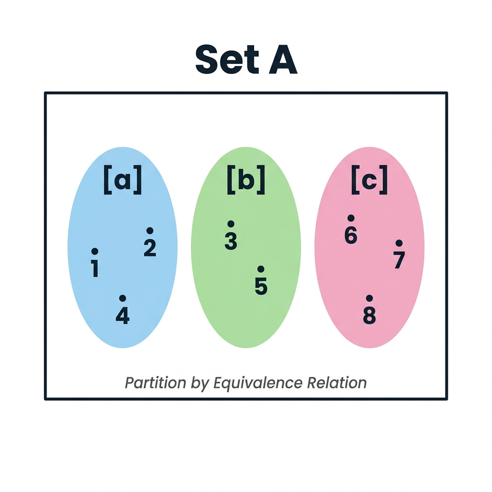
Fig 3.1 — Equivalence Relation
partitions Set A into disjoint equivalence classes [a], [b], [c]
3.1 Equivalence Classes
If $R$ is an equivalence relation on set $A$, the equivalence class of an element $a \in A$,
denoted $[a]$ or $\bar{a}$, is defined as:
$$ [a] = \{ x \in A : (x, a) \in R \} = \{ x \in A : x \text{ is related to } a \text{ under } R \} $$
Key Properties of Equivalence Classes:
- Every element of $A$ belongs to exactly one equivalence class.
- $[a] = [b]$ if and only if $(a, b) \in R$ (i.e., $a$ and $b$ are in the same equivalence class).
- Two distinct equivalence classes are always disjoint: $[a] \cap [b] = \phi$ if $[a]
\neq [b]$.
- The union of all equivalence classes equals $A$ (this is called a Partition of $A$).
3.2 Congruence Modulo $n$ - Most Important Equivalence Relation
Congruence Modulo n (RD Sharma + JEE Focus)
Definition: $a \equiv b \pmod{n}$ if and only if $n$ divides $(a - b)$, i.e., $a - b = kn$
for some integer $k$.
Theorem: The relation $R = \{(a,b) : n \mid (a-b)\}$ is always an equivalence relation on
$\mathbb{Z}$.
Equivalence Classes for $n = 3$:
$[0] = \{\ldots, -6, -3, 0, 3, 6, \ldots\}$ (multiples of 3)
$[1] = \{\ldots, -5, -2, 1, 4, 7, \ldots\}$ (leave remainder 1 when divided by 3)
$[2] = \{\ldots, -4, -1, 2, 5, 8, \ldots\}$ (leave remainder 2 when divided by 3)
These 3 classes form a partition of $\mathbb{Z}$.
Practice Problem 5 — NCERT Exemplar / Board
Q: Show that $R = \{(a, b) : 2 \mid (a - b)\}$ on $\mathbb{Z}$ is an equivalence relation.
Find $[0]$ and $[1]$.
① Reflexive: $a - a = 0 = 2(0)$, so $2 \mid 0$ → $(a,a) \in R$. ✓
② Symmetric: $(a,b) \in R \Rightarrow a-b=2k \Rightarrow b-a=-2k=2(-k)$, so $(b,a) \in
R$. ✓
③ Transitive: $(a,b),(b,c) \in R \Rightarrow a-b=2m,\; b-c=2n \Rightarrow a-c=2(m+n)
\Rightarrow (a,c) \in R$. ✓
$\therefore$ $R$ is an equivalence relation.
$[0] = \{x \in \mathbb{Z} : 2 \mid x\} = \{\ldots, -4,-2,0,2,4, \ldots\}$ (All even integers)
$[1] = \{x \in \mathbb{Z} : 2 \mid (x-1)\} = \{\ldots, -3,-1,1,3,5, \ldots\}$ (All odd integers)
Practice Problem 6 — RD Sharma Board Level
Q: Let $T$ be the set of all triangles in a plane and $R = \{(T_1, T_2) : T_1 \text{ is
similar to } T_2\}$. Show that $R$ is an equivalence relation.
① Reflexive: Every triangle is similar to itself → $(T_1, T_1) \in R$ ✓
② Symmetric: If $T_1 \sim T_2$ then $T_2 \sim T_1$ (similarity is symmetric) →
$(T_1,T_2)\in R \Rightarrow (T_2,T_1)\in R$ ✓
③ Transitive: $T_1 \sim T_2$ and $T_2 \sim T_3 \Rightarrow T_1 \sim T_3$ (transitivity
of similarity) → $(T_1,T_3)\in R$ ✓
$\dots$ $R$ is an equivalence relation.
Practice Problem 5B — JEE Main 2021 Focus
Q: If $R = \{(x, y) \mid x, y \in \mathbb{Z}, x^2 + y^2 \le 4\}$ is a relation defined on the set of integers $\mathbb{Z}$, then find the domain of $R$.
Solution:
A relation $R$ consists of ordered pairs $(x, y)$ of integers such that $x^2 + y^2 \le 4$. The domain is the set of all possible first elements $x$.
Since $x$ and $y$ are integers, their squares $x^2$ and $y^2$ must be non-negative perfect squares (i.e., $0, 1, 4, 9, \dots$).
For $x^2 + y^2 \le 4$, the possible values of $x^2$ are $0$, $1$, or $4$ (since $x^2 \le 4$). Let's analyze each case:
1. If $x^2 = 0 \implies x = 0$:
$$0^2 + y^2 \le 4 \implies y^2 \le 4 \implies y = 0, \pm 1, \pm 2$$
This gives valid integer pairs: $(0, 0), (0, \pm 1), (0, \pm 2)$.
2. If $x^2 = 1 \implies x = \pm 1$:
$$1^2 + y^2 \le 4 \implies y^2 \le 3 \implies y = 0, \pm 1$$
This gives valid integer pairs: $(\pm 1, 0), $(\pm 1, \pm 1)$.
3. If $x^2 = 4 \implies x = \pm 2$:
$$2^2 + y^2 \le 4 \implies y^2 \le 0 \implies y = 0$$
This gives valid integer pairs: $(\pm 2, 0)$.
All these cases yield valid integer pairs $(x, y)$ that belong to $R$.
Therefore, the possible integer values of $x$ are:
$$\text{Domain}(R) = \{-2, -1, 0, 1, 2\}$$
Practice Problem 5C — JEE Main 2021 Focus
Q: If $R = \{(x, y) \mid x, y \in \mathbb{Z}, x^2 + 3y^2 \le 8\}$ is a relation on the set of integers $\mathbb{Z}$, then find the domain of its inverse relation $R^{-1}$.
Solution:
We know that the domain of the inverse relation $R^{-1}$ is exactly equal to the range of the original relation $R$:
$$\text{Domain}(R^{-1}) = \text{Range}(R) = \{ y \in \mathbb{Z} : (x, y) \in R \text{ for some } x \in \mathbb{Z} \}$$
We need to find all possible integer values of $y$ for which there exists at least one integer $x$ satisfying:
$$x^2 + 3y^2 \le 8$$
Since $y$ must be an integer, let's test integer values of $y$ systematically:
1. If $y = 0$:
$$x^2 + 3(0)^2 \le 8 \implies x^2 \le 8 \implies x = 0, \pm 1, \pm 2$$
(Valid pairs exist: e.g., $(0, 0)$ is in $R$, so $y=0$ is in the range).
2. If $y = \pm 1$:
$$x^2 + 3(\pm 1)^2 \le 8 \implies x^2 + 3 \le 8 \implies x^2 \le 5 \implies x = 0, \pm 1, \pm 2$$
(Valid pairs exist: e.g., $(0, 1)$ is in $R$, so $y=\pm 1$ are in the range).
3. If $y = \pm 2$:
$$x^2 + 3(\pm 2)^2 \le 8 \implies x^2 + 12 \le 8 \implies x^2 \le -4$$
Since $x^2 \ge 0$ for all real numbers $x$, there are no integer values of $x$ satisfying this inequality. Thus, $y = \pm 2$ are not in the range.
4. If $|y| \ge 3$:
$3y^2 \ge 27$, so $x^2 \le 8 - 3y^2 < 0$, which yields no real solutions.
Thus, the only possible integer values of $y$ are $0, 1, -1$.
Therefore, the domain of the inverse relation $R^{-1}$ is:
$$\text{Domain}(R^{-1}) = \{-1, 0, 1\}$$
4. Functions - Definition and Types
Definition: Function (Mapping)
A relation $f$ from set $A$ to set $B$ is called a function if:
(i) Every element of $A$ has an image in $B$ (no element of $A$ is left out).
(ii) Each element of $A$ has exactly one image in $B$ (no element maps to two
different elements).
We write: $f: A \rightarrow B$ and say "f maps A to B."
For each $a \in A$, $f(a)$ denotes the unique image of $a$ in $B$.
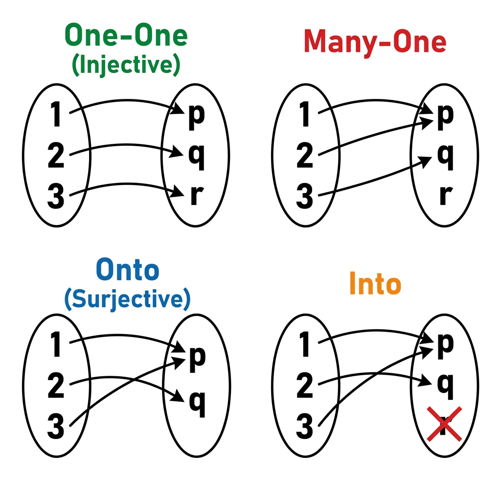
Fig 4.1 — The four types of
functions: One-One (Injective), Many-One, Onto (Surjective), Into
4.1 One-One Function (Injective)
$f: A \rightarrow B$ is One-One (Injective) if distinct elements of $A$ have distinct images
in $B$.
$f(x_1) = f(x_2) \implies x_1 = x_2$ OR equivalently: $x_1 \neq x_2 \implies f(x_1) \neq
f(x_2)$
Methods to Prove One-One
Method 1 — Algebraic (Standard Board Method):
Step 1: Let $x_1, x_2 \in A$ (domain).
Step 2: Assume $f(x_1) = f(x_2)$.
Step 3: Solve algebraically. If this necessarily gives $x_1 = x_2$, function is One-One.
Method 2 — Derivative Test (JEE / RD Sharma):
If $f$ is continuous and differentiable:
$f'(x) > 0$ for all $x$ in domain → $f$ is strictly increasing → One-One.
$f'(x) < 0$ for all $x$ in domain → $f$ is strictly decreasing → One-One.
Method 3 — Horizontal Line Test (Graphical):
Draw any horizontal line. If it intersects the graph at most once, the function is One-One. If
it intersects more than once at any point, it is Many-One.
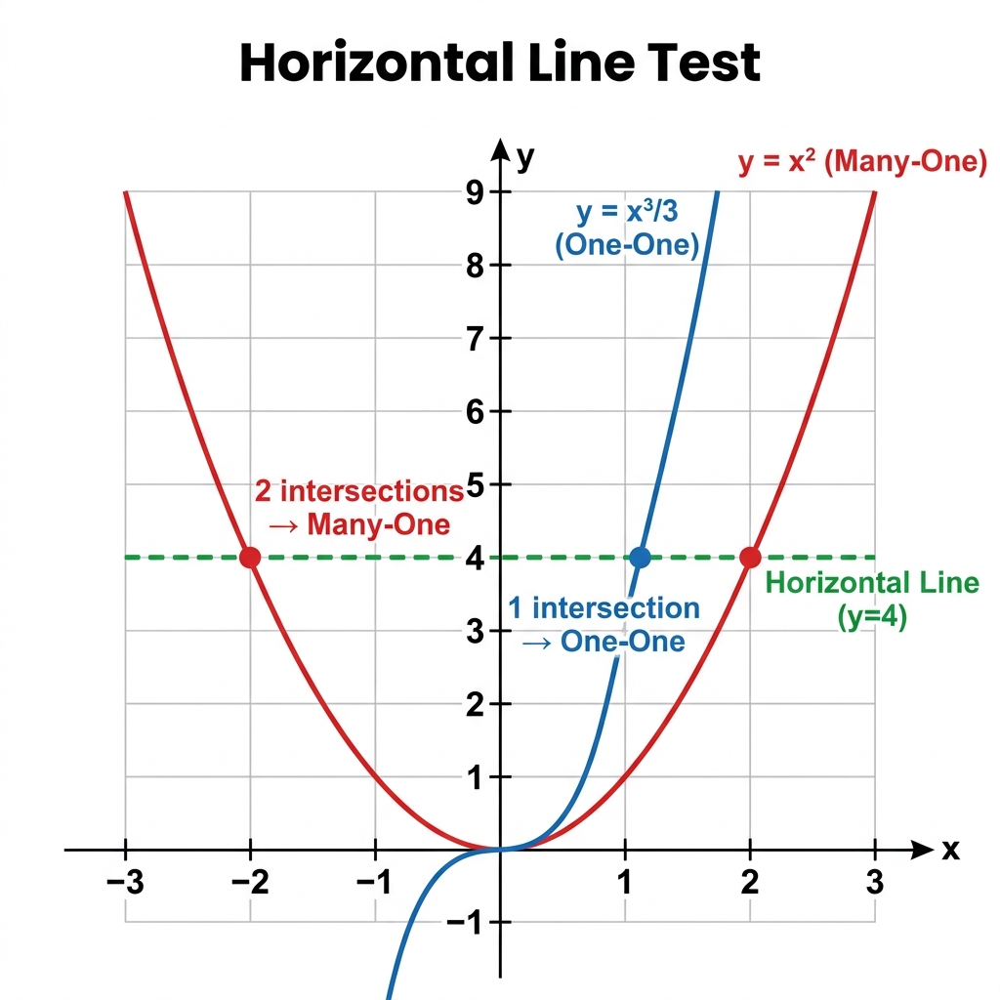
Fig 4.2 — Horizontal Line Test: A
horizontal line cuts y = x² at 2 points (Many-One) but cuts y = x³/3 at only 1 point (One-One)
4.2 Onto Function (Surjective)
$f: A \rightarrow B$ is Onto (Surjective) if every element of the co-domain $B$ has at least
one pre-image in $A$.
$\text{Range of } f = \text{Co-domain of } f$ (i.e., $f(A) = B$)
Algorithm to Prove Onto (Board Standard)
Step 1: Let $y$ be an arbitrary element of the co-domain $B$.
Step 2: Set $f(x) = y$.
Step 3: Solve for $x$ in terms of $y$ to get $x = g(y)$.
Step 4: Verify that this $x$ actually lies in the domain $A$. If yes for all $y \in B$, the function is
Onto.
4.3 Into, Many-One, and Bijective Functions
| Type |
Condition |
Key Property |
| One-One (Injective) |
$f(x_1)=f(x_2) \Rightarrow x_1=x_2$ |
No two inputs share an output |
| Many-One |
$\exists\; x_1 \neq x_2$ with $f(x_1)=f(x_2)$ |
At least two inputs share an output (Not injective) |
| Onto (Surjective) |
Range $=$ Co-domain |
Every output has a pre-image |
| Into |
Range $\subsetneq$ Co-domain |
At least one co-domain element has no pre-image (Not surjective) |
| Bijective |
One-One AND Onto |
Perfect pairing — every input has a unique output and every output is covered |
| Constant Function |
$f(x) = c$ for all $x$ |
Many-One and Into (unless $|B|=1$) |
🧠 Memory Trick: INTO vs ONTO
Think of it as archery:
• ONTO: Every target (element of B) is HIT by at least one arrow.
• INTO: Some targets are left UN-HIT (range is a strict subset of
co-domain).
For One-One vs Many-One:
• ONE-ONE: Each target hit by exactly ONE arrow.
• MANY-ONE: At least one target hit by MANY arrows.
Practice Problem 7 — Board Level (5 Marks)
Q: Show that $f: \mathbb{R} \rightarrow \mathbb{R}$ defined by $f(x) = 3x + 4$ is
bijective.
① One-One: Let $x_1, x_2 \in \mathbb{R}$. Assume $f(x_1) = f(x_2)$.
$\Rightarrow 3x_1+4 = 3x_2+4 \Rightarrow 3x_1 = 3x_2 \Rightarrow x_1 = x_2$.
$\therefore f$ is One-One. ✓
② Onto: Let $y \in \mathbb{R}$ (co-domain). Set $f(x) = y$.
$3x+4 = y \Rightarrow x = \dfrac{y-4}{3}$.
Since $y \in \mathbb{R}$, $x = \dfrac{y-4}{3} \in \mathbb{R}$ = domain. So for every $y$, a
pre-image $x$ exists.
$\therefore f$ is Onto. ✓
Since $f$ is both One-One and Onto, $\mathbf{f}$ is Bijective.
Practice Problem 8 — RD Sharma / KC Sinha Type
Q: Show that $f: \mathbb{R} \rightarrow \mathbb{R}$ defined by $f(x) = x^2$ is neither
one-one nor onto.
Not One-One: $f(2) = 4 = f(-2)$, but $2 \neq -2$. So two different inputs give the
same output. $\therefore$ Many-One (not one-one).
Not Onto: $f(x) = x^2 \geq 0$ for all $x \in \mathbb{R}$. So the range is $[0,
\infty)$, which is a proper subset of $\mathbb{R}$ (the co-domain). For example, $-1 \in \mathbb{R}$
but $-1$ has no pre-image. $\therefore$ Into (not onto).
Practice Problem 9 — NCERT Exemplar / JEE Mains Type
Q: Let $A = \mathbb{R} \setminus \{3\}$ and $B = \mathbb{R} \setminus \{1\}$. Show that
$f: A \rightarrow B$ defined by $f(x) = \dfrac{x-2}{x-3}$ is bijective.
① One-One: Assume $f(x_1) = f(x_2)$.
$\dfrac{x_1-2}{x_1-3} = \dfrac{x_2-2}{x_2-3}$
$(x_1-2)(x_2-3) = (x_2-2)(x_1-3)$
$x_1 x_2 - 3x_1 - 2x_2 + 6 = x_1 x_2 - 3x_2 - 2x_1 + 6$
$-3x_1 - 2x_2 = -3x_2 - 2x_1$
$-3x_1 + 2x_1 = -3x_2 + 2x_2 \Rightarrow -x_1 = -x_2 \Rightarrow x_1 = x_2$. ✓ One-One.
② Onto: Let $y \in B$ (so $y \neq 1$). Set $f(x) = y$:
$\dfrac{x-2}{x-3} = y \Rightarrow x-2 = y(x-3) \Rightarrow x-2 = yx-3y$
$x - yx = 2 - 3y \Rightarrow x(1-y) = 2-3y \Rightarrow x = \dfrac{2-3y}{1-y} =
\dfrac{3y-2}{y-1}$.
Since $y \neq 1$, $x$ is defined. Also $x \neq 3$: if $x = 3$, then $3y-2 = 3(y-1) = 3y-3
\Rightarrow -2=-3$, contradiction. So $x \in A$. ✓ Onto.
$\therefore$ $f$ is bijective.
Practice Problem — NCERT Classic (Modulus Function)
Q: Show that the Modulus Function $f : \mathbb{R} \rightarrow \mathbb{R}$, given by $f(x) = |x|$, is neither one-one nor onto.
Not One-One: $f(1) = |1| = 1$ and $f(-1) = |-1| = 1$. Since $f(1) = f(-1)$ but
Practice Problem 9 — NCERT Exemplar / JEE Mains Type
Q: Let $A = \mathbb{R} \setminus \{3\}$ and $B = \mathbb{R} \setminus \{1\}$. Show that
$f: A \rightarrow B$ defined by $f(x) = \dfrac{x-2}{x-3}$ is bijective.
① One-One: Assume $f(x_1) = f(x_2)$.
$\dfrac{x_1-2}{x_1-3} = \dfrac{x_2-2}{x_2-3}$
$(x_1-2)(x_2-3) = (x_2-2)(x_1-3)$
$x_1 x_2 - 3x_1 - 2x_2 + 6 = x_1 x_2 - 3x_2 - 2x_1 + 6$
$-3x_1 - 2x_2 = -3x_2 - 2x_1$
$-3x_1 + 2x_1 = -3x_2 + 2x_2 \Rightarrow -x_1 = -x_2 \Rightarrow x_1 = x_2$. ✓ One-One.
② Onto: Let $y \in B$ (so $y \neq 1$). Set $f(x) = y$:
$\dfrac{x-2}{x-3} = y \Rightarrow x-2 = y(x-3) \Rightarrow x-2 = yx-3y$
$x - yx = 2 - 3y \Rightarrow x(1-y) = 2-3y \Rightarrow x = \dfrac{2-3y}{1-y} =
\dfrac{3y-2}{y-1}$.
Since $y \neq 1$, $x$ is defined. Also $x \neq 3$: if $x = 3$, then $3y-2 = 3(y-1) = 3y-3
\Rightarrow -2=-3$, contradiction. So $x \in A$. ✓ Onto.
$\therefore$ $f$ is bijective.
\neq -1$, two different inputs have the same output. Therefore, it is Many-One (not one-one). ✗
Not Onto: The co-domain is $\mathbb{R}$. However, the output of the modulus function is always non-negative ($f(x) \ge 0$). This means negative real numbers in the co-domain (like $-2$) have no pre-image in the domain. Since the range $[0, \infty)$ is a proper subset of the co-domain $\mathbb{R}$, it is Into (not onto). ✗
Practice Problem — NCERT Classic (Greatest Integer Function)
Q: Show that the Greatest Integer Function $f : \mathbb{R} \rightarrow \mathbb{R}$, given by $f(x) = [x]$, is neither one-one nor onto, where $[x]$ denotes the greatest integer less than or equal to $x$.
Not One-One: Consider $x_1 = 1.2$ and $x_2 = 1.5$. Both are in $\mathbb{R}$.
$f(1.2) = [1.2] = 1$ and $f(1.5) = [1.5] = 1$. Since $f(1.2) = f(1.5)$ but
Practice Problem 9 — NCERT Exemplar / JEE Mains Type
Q: Let $A = \mathbb{R} \setminus \{3\}$ and $B = \mathbb{R} \setminus \{1\}$. Show that
$f: A \rightarrow B$ defined by $f(x) = \dfrac{x-2}{x-3}$ is bijective.
① One-One: Assume $f(x_1) = f(x_2)$.
$\dfrac{x_1-2}{x_1-3} = \dfrac{x_2-2}{x_2-3}$
$(x_1-2)(x_2-3) = (x_2-2)(x_1-3)$
$x_1 x_2 - 3x_1 - 2x_2 + 6 = x_1 x_2 - 3x_2 - 2x_1 + 6$
$-3x_1 - 2x_2 = -3x_2 - 2x_1$
$-3x_1 + 2x_1 = -3x_2 + 2x_2 \Rightarrow -x_1 = -x_2 \Rightarrow x_1 = x_2$. ✓ One-One.
② Onto: Let $y \in B$ (so $y \neq 1$). Set $f(x) = y$:
$\dfrac{x-2}{x-3} = y \Rightarrow x-2 = y(x-3) \Rightarrow x-2 = yx-3y$
$x - yx = 2 - 3y \Rightarrow x(1-y) = 2-3y \Rightarrow x = \dfrac{2-3y}{1-y} =
\dfrac{3y-2}{y-1}$.
Since $y \neq 1$, $x$ is defined. Also $x \neq 3$: if $x = 3$, then $3y-2 = 3(y-1) = 3y-3
\Rightarrow -2=-3$, contradiction. So $x \in A$. ✓ Onto.
$\therefore$ $f$ is bijective.
.2 \neq 1.5$, the function is Many-One. ✗
Not Onto: The co-domain is $\mathbb{R}$. The range of $f(x) = [x]$ is the set of integers $\mathbb{Z}$. Thus, non-integers in the co-domain (e.g.,
Practice Problem 9 — NCERT Exemplar / JEE Mains Type
Q: Let $A = \mathbb{R} \setminus \{3\}$ and $B = \mathbb{R} \setminus \{1\}$. Show that
$f: A \rightarrow B$ defined by $f(x) = \dfrac{x-2}{x-3}$ is bijective.
① One-One: Assume $f(x_1) = f(x_2)$.
$\dfrac{x_1-2}{x_1-3} = \dfrac{x_2-2}{x_2-3}$
$(x_1-2)(x_2-3) = (x_2-2)(x_1-3)$
$x_1 x_2 - 3x_1 - 2x_2 + 6 = x_1 x_2 - 3x_2 - 2x_1 + 6$
$-3x_1 - 2x_2 = -3x_2 - 2x_1$
$-3x_1 + 2x_1 = -3x_2 + 2x_2 \Rightarrow -x_1 = -x_2 \Rightarrow x_1 = x_2$. ✓ One-One.
② Onto: Let $y \in B$ (so $y \neq 1$). Set $f(x) = y$:
$\dfrac{x-2}{x-3} = y \Rightarrow x-2 = y(x-3) \Rightarrow x-2 = yx-3y$
$x - yx = 2 - 3y \Rightarrow x(1-y) = 2-3y \Rightarrow x = \dfrac{2-3y}{1-y} =
\dfrac{3y-2}{y-1}$.
Since $y \neq 1$, $x$ is defined. Also $x \neq 3$: if $x = 3$, then $3y-2 = 3(y-1) = 3y-3
\Rightarrow -2=-3$, contradiction. So $x \in A$. ✓ Onto.
$\therefore$ $f$ is bijective.
.5, 0.7$) do not have any pre-image in the domain. ✗
5. Special Functions (JEE & Boards Focus)
Mastering modulus, greatest integer, fractional part, signum, exponential, and logarithmic functions is critical for Board MCQs, but absolutely vital for JEE Mains. Let's arrange their properties and graphs systematically.
5.1 Modulus Function (Absolute Value Function)
Definition: Modulus Function
The
Modulus Function $f: \mathbb{R} \rightarrow \mathbb{R}$ is defined as:
$$ f(x) = |x| = \begin{cases} x, & \text{if } x \ge 0 \\ -x, & \text{if } x < 0 \end{cases} $$
- Domain: $\mathbb{R}$ (all real numbers)
- Range: $[0, \infty)$ (all non-negative real numbers)
- Geometric Meaning: Represents the absolute distance of point $x$ from the origin on the number line. Distance is never negative, hence $|x| \ge 0$.
Opening Modulus (Critical Points Method)
To free an expression from modulus, locate its critical point (CP) by setting the expression inside the mod to zero. On the right of the critical point, the modulus opens with a plus sign; on the left, it opens with a minus sign:
$$ |g(x)| = \begin{cases} g(x), & \text{if } g(x) \ge 0 \\ -g(x), & \text{if } g(x) < 0 \end{cases} $$
Practice Problem 7B — slide 80
Q: Define the function $f(x) = |2x - 3|$ free of modulus and draw its graph.
Solution:
Step 1: Locate the critical point (CP)
Set the expression inside the mod to zero:
$$2x - 3 = 0 \implies x = \dfrac{3}{2}$$
So $x = 1.5$ is the critical point.
Step 2: Open the modulus piecewise
- If $x \ge \frac{3}{2} \implies 2x - 3 \ge 0 \implies f(x) = \mathbf{2x - 3}$
- If $x < \frac{3}{2} \implies 2x - 3 < 0 \implies f(x) = -(2x - 3) = \mathbf{-2x + 3}$
Therefore:
$$ f(x) = \begin{cases} 2x - 3, & \text{if } x \ge 1.5 \\ -2x + 3, & \text{if } x < 1.5 \end{cases} $$
Step 3: Graph the function
The graph is a symmetrical V-shape with its vertex at the critical point $(1.5, 0)$.
- For $x \ge 1.5$, it follows the straight line $y = 2x - 3$.
- For $x < 1.5$, it follows the straight line $y = -2x + 3$.
Double Modulus Graphs (The Boat/Trough Shortcut)
When drawing graphs of the form $f(x) = |x - a| + |x - b|$, locate the critical points at $x = a$ and $x = b$. Between these two points, the graph forms a flat bottom (like a boat or trough), rising symmetrically to infinity on both the left and right sides.
Practice Problem 7C — slide 85
Q: Draw the graph of the double modulus function $f(x) = |x - 1| + |x - 2|$ using the shortcut method.
Solution:
Step 1: Find Critical Points
Set each modulus expression to zero:
$$x - 1 = 0 \implies x = 1 \quad \text{and} \quad x - 2 = 0 \implies x = 2$$
So the critical points are $x = 1$ and $x = 2$.
Step 2: Plot Critical Points and Boundary Values
Let's calculate $y = f(x)$ at critical points and some nearby integers:
- At $x = 1 \implies f(1) = |1 - 1| + |1 - 2| = 0 + 1 = \mathbf{1}$
- At $x = 2 \implies f(2) = |2 - 1| + |2 - 2| = 1 + 0 = \mathbf{1}$
- At $x = 0 \implies f(0) = |0 - 1| + |0 - 2| = 1 + 2 = \mathbf{3}$
- At $x = 3 \implies f(3) = |3 - 1| + |3 - 2| = 2 + 1 = \mathbf{3}$
Step 3: Connect the points
- Connect the vertices $(1, 1)$ and $(2, 1)$ with a flat horizontal line $y = 1$.
- For $x \ge 2$, draw the ray starting at $(2, 1)$ passing through $(3, 3)$ with slope $+2$ ($y = 2x - 3$).
- For $x \le 1$, draw the ray starting at $(1, 1)$ passing through $(0, 3)$ with slope $-2$ ($y = -2x + 3$).
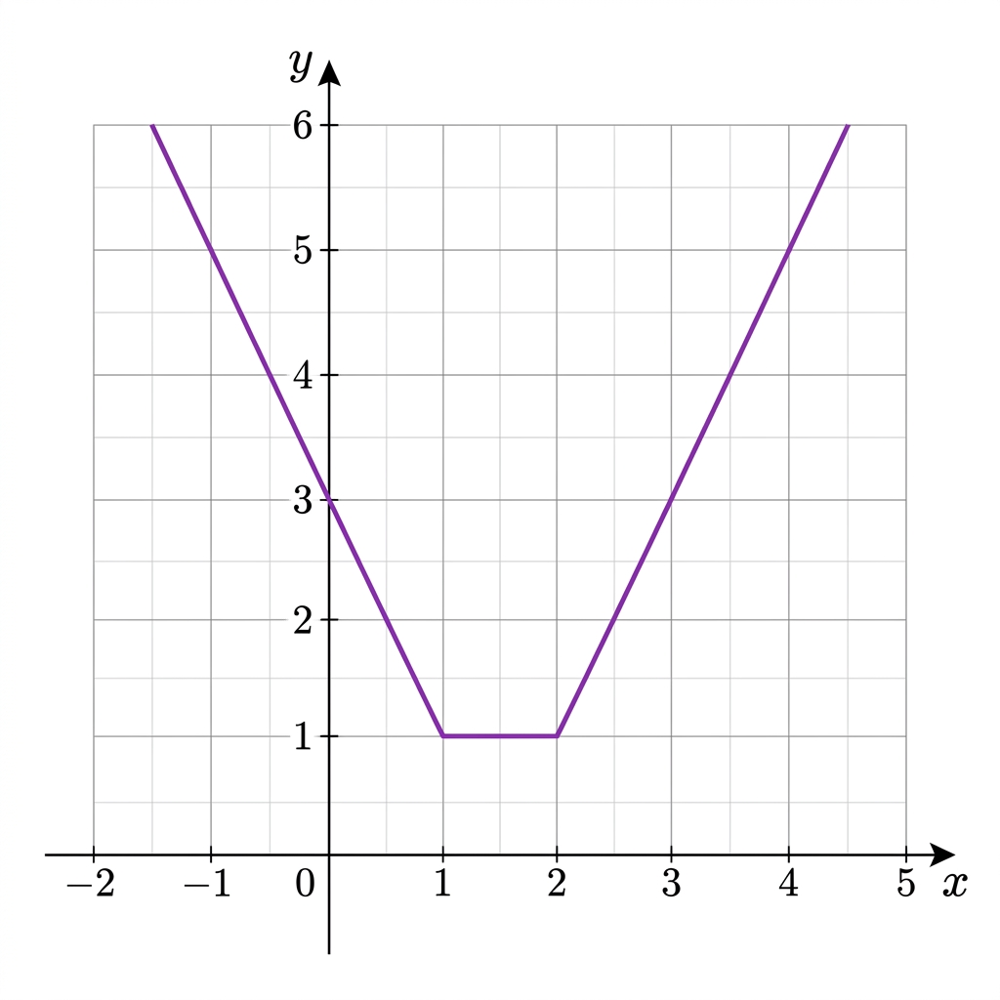
Fig 5.1 — Trough-shaped double modulus curve of f(x) = |x - 1| + |x - 2| showing the flat bottom between vertices
Solving Modulus Equations
Modulus equations can be solved using either algebraic piecewise definition or graphical intersection methods.
Practice Problem 7D — slide 113
Q: Solve for real $x$: $||x + 1| - 4| = 5$.
Solution:
Using the property $|f(x)| = a \implies f(x) = \pm a$:
$$|x + 1| - 4 = \pm 5 \implies |x + 1| = 4 \pm 5$$
This splits into two cases:
- Case 1: $|x + 1| = 4 + 5 = 9$
$$x + 1 = \pm 9 \implies x = -1 \pm 9 \implies \mathbf{x = 8} \quad \text{or} \quad \mathbf{x = -10}$$
- Case 2: $|x + 1| = 4 - 5 = -1$
Since the absolute value of a real number is always non-negative, $|x + 1| = -1$ has no real solutions.
Therefore, the only real solutions are:
$$\boxed{x = 8, -10}$$
Practice Problem 7E — slide 114
Q: Solve for real $x$: $|x - 1| - |x| = 1$ using algebraic and graphical methods.
1. Algebraic Method:
Identify critical points: $x = 0$ and $x = 1$. This divides the real line into three intervals:
- Interval 1 ($x < 0$): Both terms inside the mod are negative:
$$-(x - 1) - (-x) = 1 \implies -x + 1 + x = 1 \implies 1 = 1$$
This identity is always true! Thus, the entire interval is a solution:
$$\mathbf{x \in (-\infty, 0)}$$
- Interval 2 ($0 \le x \le 1$): $(x-1)$ is non-positive, but $x$ is non-negative:
$$-(x - 1) - x = 1 \implies -2x + 1 = 1 \implies 2x = 0 \implies \mathbf{x = 0}$$
- Interval 3 ($x > 1$): Both terms inside the mod are positive:
$$(x - 1) - x = 1 \implies -1 = 1 \quad \text{(False)}$$
No solution exists in this interval.
Combining the results, the final solution set is:
$$\boxed{x \in (-\infty, 0]}$$
2. Graphical Method:
We plot the curve $y = |x - 1| - |x|$ and locate its intersection with the horizontal line $y = 1$:
- For $x > 1$, $y = -1$.
- For $0 \le x \le 1$, $y = 1 - 2x$, which is a straight line segment joining $(0, 1)$ and $(1, -1)$.
- For $x < 0$, $y = 1$.
The curve intersects and merges with the line $y = 1$ exactly for all $x \le 0$. Hence, the solution is $x \in (-\infty, 0]$.
5.2 Greatest Integer Function (G.I.F. / Step Function)
Definition: Greatest Integer Function
The
Greatest Integer Function $f(x) = [x]$ (also known as the floor function) maps a real number $x$ to the greatest integer that is less than or equal to $x$.
$$ f(x) = [x] = n \iff n \le x < n+1, \quad n \in \mathbb{Z} $$
- Domain: $\mathbb{R}$
- Range: $\mathbb{Z}$ (set of all integers)
- Examples: $[3.2] = 3$, $[2.1] = 2$, $[0.7] = 0$, $[-3.14] = -4$
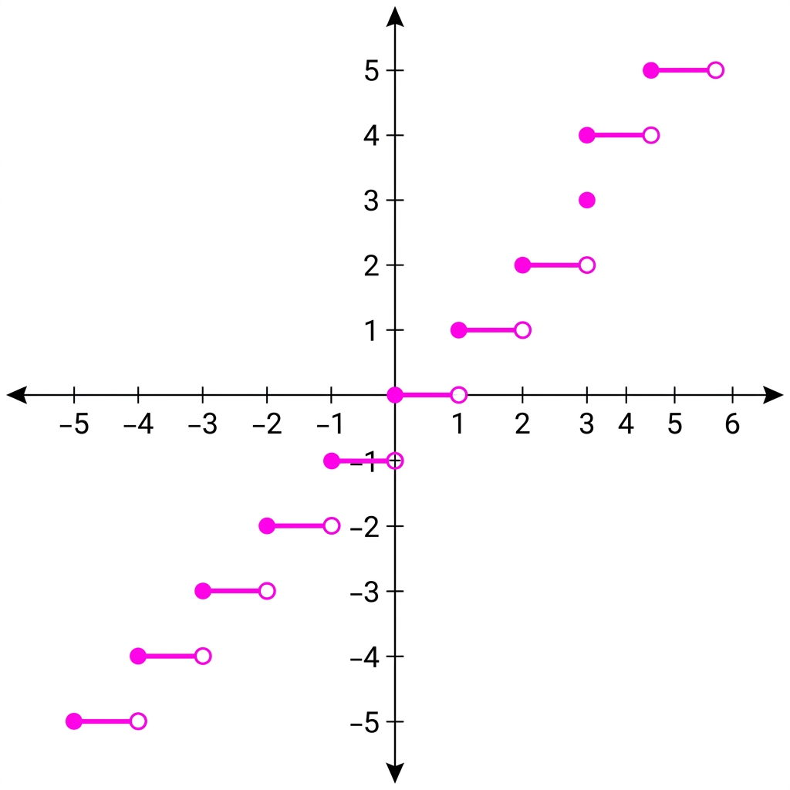
Fig 5.2 — Staircase-style step graph of the Greatest Integer Function y = [x] showing closed left endpoints and open right endpoints
Core Properties of G.I.F. (Must Memorize)
Properties of Floor Function
- $x - 1 < [x] \le x$
- $[x + n] = [x] + n$ if and only if $n$ is an integer ($n \in \mathbb{Z}$).
- $[x + [x]] = 2[x]$ (Since $[x]$ is always an integer, it pulls out).
- $[x] + [-x] = \begin{cases} 0, & \text{if } x \in \mathbb{Z} \\ -1, & \text{if } x \notin \mathbb{Z} \end{cases}$
5.3 Fractional Part Function (F.P.F.)
Definition: Fractional Part Function
The
Fractional Part Function is denoted as $f(x) = \{x\}$ and is defined as the difference between a real number $x$ and its greatest integer part:
$$ f(x) = \{x\} = x - [x] $$
- Domain: $\mathbb{R}$
- Range: $[0, 1)$ (always non-negative and strictly less than 1)
- Examples: $\{3.2\} = 3.2 - 3 = 0.2$, $\{-2.1\} = -2.1 - [-2.1] = -2.1 - (-3) = 0.9$
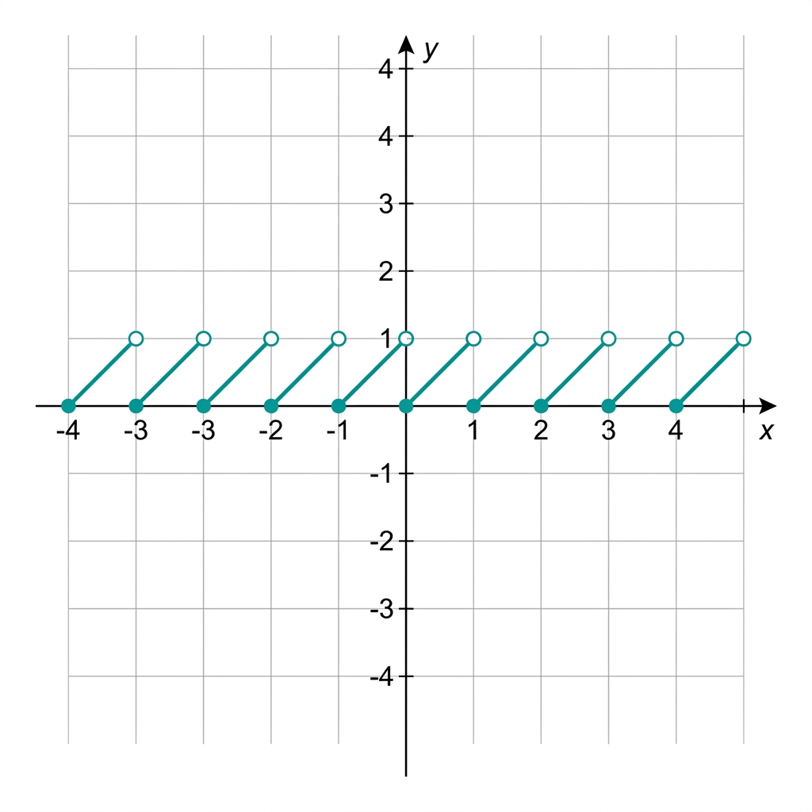
Fig 5.3 — Sawtooth periodic curve of the Fractional Part Function y = {x} with period 1
Core Properties of F.P.F.
Properties of {x}
- $0 \le \{x\} < 1$
- $x = [x] + \{x\}$ (Fundamental Decomposition).
- $\{x + n\} = \{x\}$ if and only if $n \in \mathbb{Z}$. (FPF is a periodic function with period 1).
- $\{x\} + \{-x\} = \begin{cases} 0, & \text{if } x \in \mathbb{Z} \\ 1, & \text{if } x \notin \mathbb{Z} \end{cases}$
Practice Problem 7F — slide 174
Q: Solve the equation: $4[x] = x + \{x\}$.
Solution:
Step 1: Decompose x into integer and fractional parts
Substitute $x = [x] + \{x\}$ into the equation:
$$4[x] = ([x] + \{x\}) + \{x\}$$
$$4[x] = [x] + 2\{x\}$$
$$3[x] = 2\{x\} \implies \{x\} = \dfrac{3[x]}{2}$$
Step 2: Apply the range constraint $0 \le \{x\} < 1$
$$0 \le \dfrac{3[x]}{2} < 1$$
Multiply by $\frac{2}{3}$:
$$0 \le [x] < \dfrac{2}{3}$$
Step 3: Solve for the integer [x]
Since $[x]$ must be an integer, the only integer in the interval $[0, \frac{2}{3})$ is:
$$[x] = 0$$
Step 4: Find the final value of x
Substitute $[x] = 0$ back into the formula for $\{x\}$:
$$\{x\} = \dfrac{3(0)}{2} = 0$$
Thus, the solution is:
$$x = [x] + \{x\} = 0 + 0 = \mathbf{0}$$
Practice Problem 7G — slide 176
Q: Find the number of real solutions of the equation $[2x] - 3\{2x\} = 1$.
Solution:
Step 1: Simplify by substitution
Let $t = 2x$. The equation becomes:
$$[t] - 3\{t\} = 1 \implies 3\{t\} = [t] - 1 \implies \{t\} = \dfrac{[t] - 1}{3}$$
Step 2: Apply FPF range constraint $0 \le \{t\} < 1$
$$0 \le \dfrac{[t] - 1}{3} < 1$$
$$0 \le [t] - 1 < 3 \implies 1 \le [t] < 4$$
Step 3: Solve for integers [t]
Since $[t]$ must be an integer, the possible values are:
$$[t] = 1, 2, 3$$
Step 4: Find values of t and x
- If $[t] = 1 \implies \{t\} = \frac{1 - 1}{3} = 0 \implies t = [t] + \{t\} = 1 \implies x = \dfrac{1}{2}$
- If $[t] = 2 \implies \{t\} = \frac{2 - 1}{3} = \frac{1}{3} \implies t = 2 + \frac{1}{3} = \frac{7}{3} \implies x = \dfrac{7}{6}$
- If $[t] = 3 \implies \{t\} = \frac{3 - 1}{3} = \frac{2}{3} \implies t = 3 + \frac{2}{3} = \frac{11}{3} \implies x = \dfrac{11}{6}$
All these three solutions are distinct and valid.
Therefore, the number of real solutions is 3, and the solution set is:
$$\boxed{x \in \left\{ \frac{1}{2}, \frac{7}{6}, \frac{11}{6} \right\}}$$
Practice Problem 7H — slide 178
Q: Find the number of real solutions of the equation $[x] + \{-x\} = 2x$.
Solution:
We know that the fractional part of a negative number is:
$$\{-x\} = \begin{cases} 0, & \text{if } x \in \mathbb{Z} \\ 1 - \{x\}, & \text{if } x \notin \mathbb{Z} \end{cases}$$
This splits the problem into two cases:
- Case 1: $x \in \mathbb{Z}$ (Integers)
For $x \in \mathbb{Z}$, we have $[x] = x$ and $\{-x\} = 0$.
The equation becomes:
$$x + 0 = 2x \implies x = 0$$
Since $0$ is an integer, this is a valid solution. ✓
- Case 2: $x \notin \mathbb{Z}$ (Non-Integers)
Here, $[x] = x - \{x\}$ and $\{-x\} = 1 - \{x\}$.
The equation becomes:
$$(x - \{x\}) + (1 - \{x\}) = 2x$$
$$x - 2\{x\} + 1 = 2x \implies 1 - 2\{x\} = x$$
Substitute $x = [x] + \{x\}$:
$$1 - 2\{x\} = [x] + \{x\}$$
$$\implies 3\{x\} = 1 - [x] \implies \{x\} = \dfrac{1 - [x]}{3}$$
Apply the constraint for non-integers $0 < \{x\} < 1$:
$$0 < \dfrac{1 - [x]}{3} < 1 \implies 0 < 1 - [x] < 3$$
$$\implies -2 < -[x] < 1 \implies -1 < [x] < 2$$
Since $[x]$ is an integer, the possible values are:
- Subcase 2.1: $[x] = 0$
$$\{x\} = \dfrac{1 - 0}{3} = \dfrac{1}{3} \implies x = 0 + \dfrac{1}{3} = \dfrac{1}{3}$$
*(This is valid because $1/3 \notin \mathbb{Z}$ and $[1/3] = 0$).* ✓
- Subcase 2.2: $[x] = 1$
$$\{x\} = \dfrac{1 - 1}{3} = 0 \implies x = 1 + 0 = 1$$
*(This is rejected because $1 \in \mathbb{Z}$, which violates the non-integer assumption).* ✗
Therefore, the equation has exactly
2 solutions:
$$\boxed{x = 0, \frac{1}{3}}$$
5.4 Signum Function
Definition: Signum Function
The
Signum Function $f: \mathbb{R} \rightarrow \mathbb{R}$ extracts the sign of a real number:
$$ f(x) = \text{sgn}(x) = \begin{cases} 1, & \text{if } x > 0 \\ 0, & \text{if } x = 0 \\ -1, & \text{if } x < 0 \end{cases} $$
Or equivalently:
$$ f(x) = \text{sgn}(x) = \begin{cases} \dfrac{|x|}{x}, & \text{if } x \neq 0 \\ 0, & \text{if } x = 0 \end{cases} $$
- Domain: $\mathbb{R}$
- Range: $\{-1, 0, 1\}$ (Contains exactly three values)
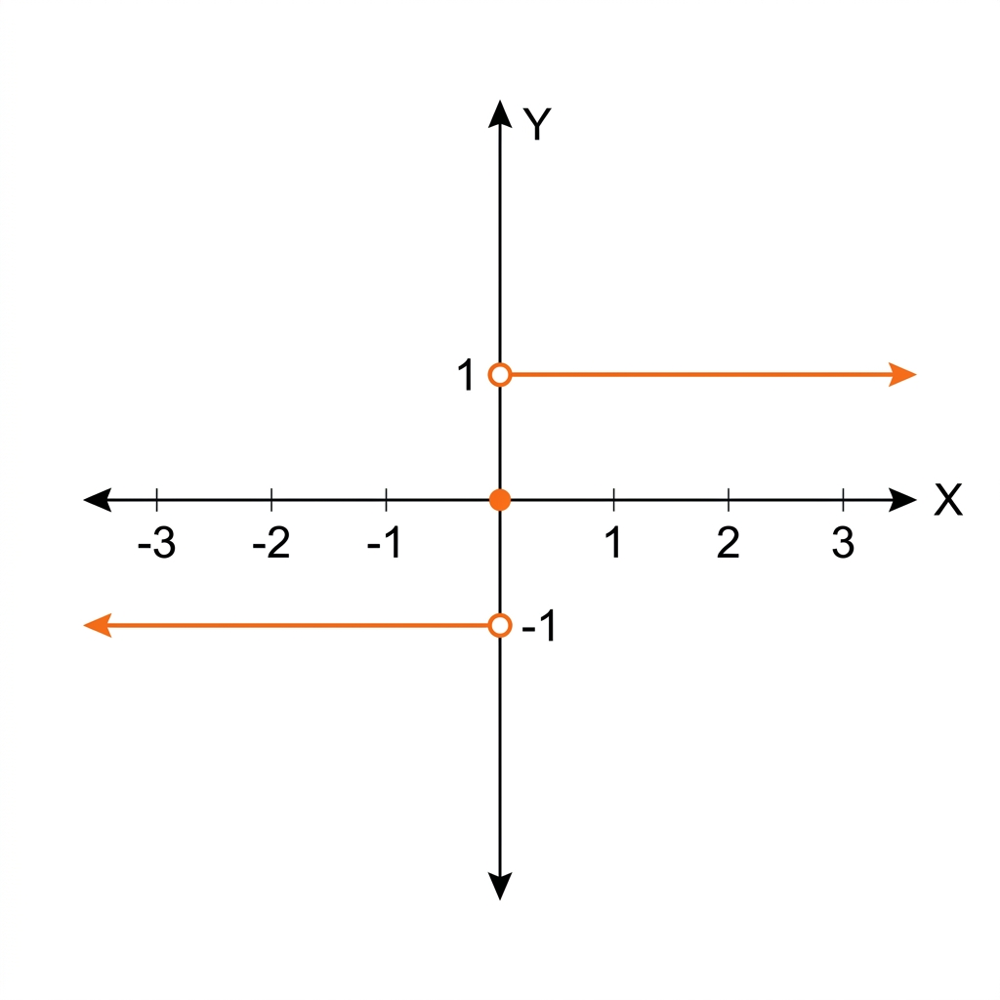
Fig 5.4 — Graph of the Signum Function y = sgn(x) showing open intervals at (0,1) and (0,-1), and a solid dot at (0,0)
5.5 Exponential and Logarithmic Functions
1. Exponential Function: Defined as $f(x) = a^x$ where base $a > 0$ and $a \neq 1$.
- Domain: $\mathbb{R}$, Range: $(0, \infty)$
- If $a > 1$, it is strictly increasing (e.g. $y = e^x$).
- If $0 < a < 1$, it is strictly decreasing (e.g. $y = (1/2)^x$).
2. Logarithmic Function: Defined as $f(x) = \log_a x$, which is the inverse of the exponential function. It is defined ONLY if:
- Base Constraint: $a > 0$ and $a \neq 1$.
- Input Constraint: $x > 0$.
- Domain: $(0, \infty)$, Range: $\mathbb{R}$.
6. Counting Functions - Combinatorics (JEE Focus)
Let $n(A) = m$ and $n(B) = n$ (both finite sets).
Important Counting Formulas — Must Memorize
① Total number of functions $f: A \rightarrow B$: $\;n^m$ (each of m elements can
go to any of n elements)
② Total number of One-One (Injective) functions:
If $n \geq m$: $\;^nP_m = \dfrac{n!}{(n-m)!}$
If $n < m$: $\;0$ (Pigeonhole Principle — cannot inject m elements into fewer slots)
③ Total number of Onto (Surjective) functions:
If $n > m$: $\;0$ (cannot cover more co-domain elements than domain elements)
If $n \leq m$: Inclusion-Exclusion Formula:
$$ \sum_{r=0}^{n} (-1)^r \,{}^nC_r\, (n-r)^m $$
Special case $n = 2$: $\;2^m - 2$ (simplest and most asked in exams!)
④ Total number of Bijective functions ($m = n$): $\;n!$
If $m \neq n$: $\;0$.
Practice Problem 10 — JEE Mains Style
Q: Let $A = \{1,2,3,4,5\}$ and $B = \{x,y\}$. Find: (a) Total functions, (b) One-One
functions, (c) Onto functions.
$m = n(A) = 5$, $n = n(B) = 2$.
(a) Total functions $= n^m = 2^5 = \mathbf{32}$
(b) One-One functions: Since $n < m$ (i.e., $2 < 5$), $=\mathbf{0}$
(Pigeonhole).
(c) Onto functions: $n=2 \leq m=5$, use $2^m - 2 = 2^5 - 2 = 32 - 2 =
\mathbf{30}$.
Practice Problem 11 — RD Sharma Counting
Q: Let $A = \{1,2,3\}$ and $B = \{4,5,6,7\}$. Find: (a) Total functions, (b) One-One
functions, (c) Onto functions.
$m = 3$, $n = 4$.
(a) Total functions $= 4^3 = \mathbf{64}$
(b) One-One functions: $n \geq m$, so $^4P_3 = \dfrac{4!}{(4-3)!} = \dfrac{24}{1} =
\mathbf{24}$
(c) Onto functions: $n > m$ ($4 > 3$), so $= \mathbf{0}$.
7. Composition of Functions
Definition: Composition
Let $f: A \rightarrow B$ and $g: B \rightarrow C$. The composite function $g \circ f$
is defined as:
$$ (g \circ f)(x) = g(f(x)) \quad \forall\; x \in A $$
The composite function $g \circ f : A \rightarrow C$.
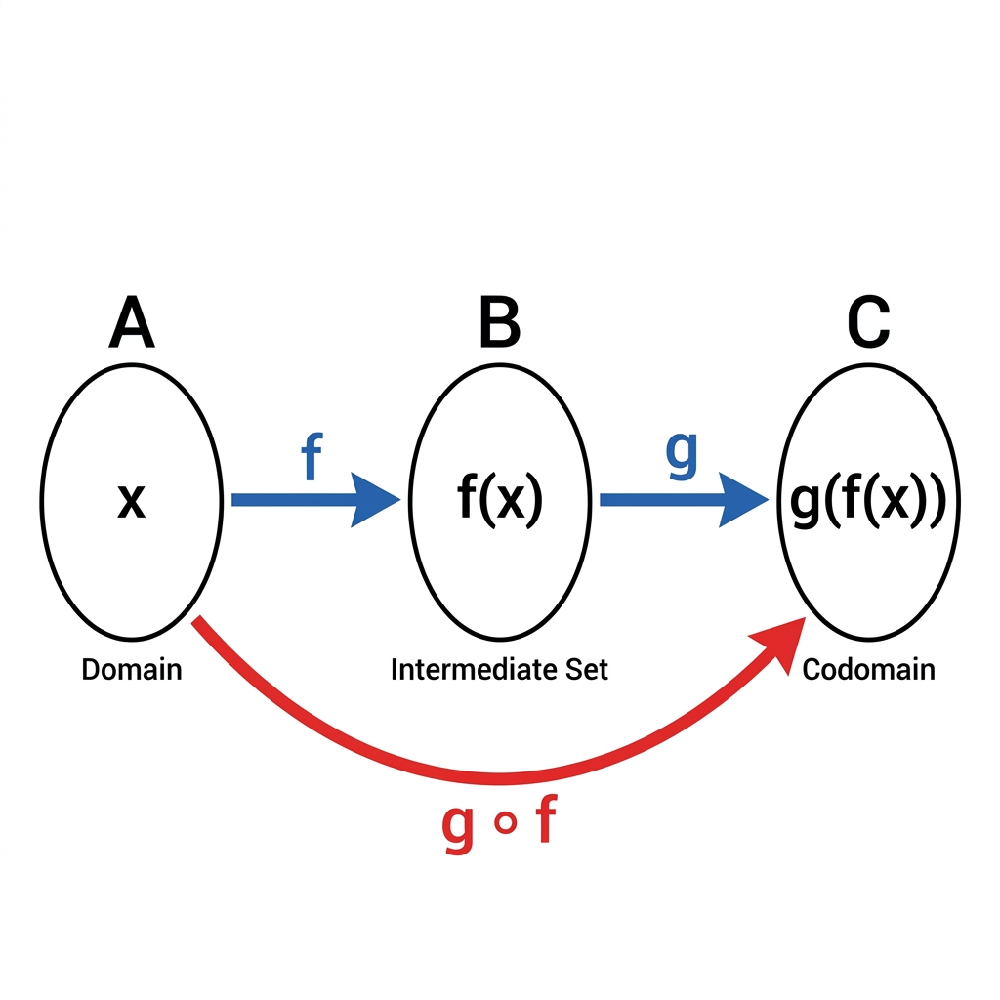
Fig 6.1 — Composition g∘f: the
red curved arrow shows the direct mapping from A to C, combining f and g
Key Properties of Composition
- Condition for $g \circ f$ to exist: Range of $f \subseteq$ Domain of $g$.
- Non-commutative: In general, $f \circ g \neq g \circ f$.
- Associative: $h \circ (g \circ f) = (h \circ g) \circ f$ (when defined).
- Identity Composition: $f \circ I_A = f = I_B \circ f$.
- Composition preserves bijectivity: If $f$ and $g$ are both bijections, then $g
\circ f$ is also a bijection.
- Important: If $g \circ f$ is one-one, then $f$ must be one-one (but $g$ need
not be).
- Important: If $g \circ f$ is onto, then $g$ must be onto (but $f$ need not be).
Practice Problem 12 — NCERT Board Level
Q: If $f(x) = x^2 - 3x + 2$, find $f(f(x))$.
$f(f(x)) = (f(x))^2 - 3(f(x)) + 2$
$= (x^2-3x+2)^2 - 3(x^2-3x+2) + 2$
Expand $(x^2-3x+2)^2 = x^4 + 9x^2 + 4 - 6x^3 + 4x^2 - 12x = x^4 - 6x^3 + 13x^2 - 12x + 4$
$\therefore\; f(f(x)) = x^4 - 6x^3 + 13x^2 - 12x + 4 - 3x^2 + 9x - 6 + 2$
$= \mathbf{x^4 - 6x^3 + 10x^2 - 3x}$
Practice Problem 13 — RD Sharma / JEE Type
Q: If $f: \mathbb{R} \rightarrow \mathbb{R}$ is $f(x) = 2x+1$ and $g: \mathbb{R}
\rightarrow \mathbb{R}$ is $g(x) = x^2-2$, find $f \circ g$ and $g \circ f$ and show they are not equal.
$(f \circ g)(x) = f(g(x)) = f(x^2-2) = 2(x^2-2)+1 = 2x^2-4+1 = \mathbf{2x^2-3}$
$(g \circ f)(x) = g(f(x)) = g(2x+1) = (2x+1)^2-2 = 4x^2+4x+1-2 = \mathbf{4x^2+4x-1}$
Since $2x^2-3 \neq 4x^2+4x-1$ in general (e.g., at $x=1$: $-1 \neq 7$), we have $f \circ g \neq g
\circ f$.
Practice Problem 14 — RS Aggarwal Type
Q: If $f(x) = \dfrac{4x+3}{6x-4}$, $x \neq \dfrac{2}{3}$, show that $f \circ f = I$
(the identity function).
$(f \circ f)(x) = f(f(x)) = f\!\left(\dfrac{4x+3}{6x-4}\right)$
$= \dfrac{4\cdot\dfrac{4x+3}{6x-4}+3}{6\cdot\dfrac{4x+3}{6x-4}-4} =
\dfrac{\dfrac{16x+12}{6x-4}+3}{\dfrac{24x+18}{6x-4}-4}$
$= \dfrac{\dfrac{16x+12+18x-12}{6x-4}}{\dfrac{24x+18-24x+16}{6x-4}} = \dfrac{34x+0}{34} =
\dfrac{34x}{34} = \mathbf{x}$
Since $(f \circ f)(x) = x = I(x)$, $f \circ f = I$. Hence $f$ is its own inverse.
8. Invertible Functions and Inverse of a Function
Definition: Invertible Function
A function $f: A \rightarrow B$ is invertible if there exists a function $g: B
\rightarrow A$ such that:
$$ g \circ f = I_A \quad \text{and} \quad f \circ g = I_B $$
The function $g$ is called the inverse of $f$, denoted by $f^{-1}$.
Fundamental Theorem: $f$ is invertible $\iff$ $f$ is bijective (both
one-one and onto).
Algorithm to Find $f^{-1}(x)$ — Board Standard Method
Step 1: First prove $f$ is bijective.
Step 2: Let $y = f(x)$ (write the function).
Step 3: Solve the equation to get $x$ expressed entirely in terms of $y$. You get $x = h(y)$.
Step 4: Write $f^{-1}(y) = h(y)$.
Step 5: Replace $y$ by $x$ to get the final answer: $f^{-1}(x) = h(x)$.
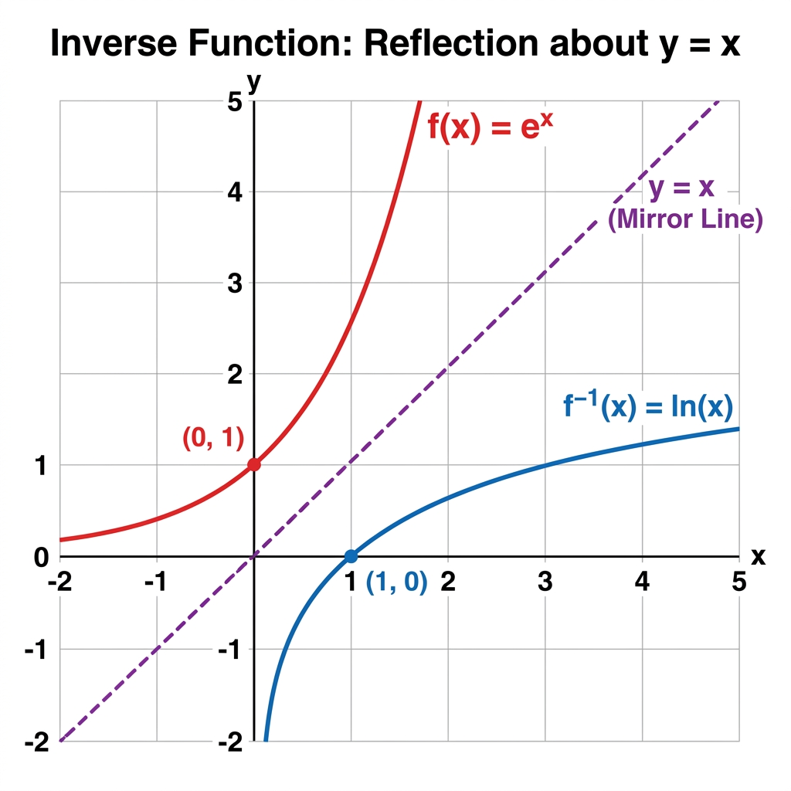
Fig 7.1 — The graph of f(x) =
eˣ and its inverse f⁻¹(x) = ln(x) are mirror images across the line y = x
Properties of Inverse Functions
- $(f^{-1})^{-1} = f$
- Reversal Rule: $(g \circ f)^{-1} = f^{-1} \circ g^{-1}$ (Note the
reversal of order!)
- The inverse of a bijection is also a bijection.
- The graph of $f$ and $f^{-1}$ are symmetric about the line $y = x$.
- $f(f^{-1}(x)) = x$ and $f^{-1}(f(x)) = x$.
Practice Problem 15 — NCERT Board (5 Marks)
Q: Consider $f: \mathbb{R}_+ \rightarrow [4, \infty)$ defined by $f(x) = x^2 + 4$. Show
that $f$ is invertible and find $f^{-1}$.
① One-One: Let $f(x_1) = f(x_2) \Rightarrow x_1^2+4 = x_2^2+4 \Rightarrow x_1^2 =
x_2^2$. Since $x_1, x_2 \in \mathbb{R}_+$ (positive), $x_1 = x_2$. ✓
② Onto: Let $y \in [4,\infty)$. Set $x^2+4 = y \Rightarrow x = \sqrt{y-4}$
(positive root, since domain = $\mathbb{R}_+$). Since $y \geq 4$, $y-4 \geq 0$, so $x$ is real and
positive, i.e., $x \in \mathbb{R}_+$. ✓
$\therefore$ $f$ is bijective, hence invertible.
Finding $f^{-1}$: From above, $x = \sqrt{y-4}$.
$f^{-1}(y) = \sqrt{y-4}$. Replacing $y$ by $x$:
$\boxed{f^{-1}(x) = \sqrt{x-4}, \quad x \in [4,\infty)}$
Practice Problem 16 — RD Sharma Type
Q: Let $f: \mathbb{R} \rightarrow \mathbb{R}$ be defined by $f(x) = \dfrac{2x-7}{4}$.
Find $f^{-1}$.
Step 1: (One-One) $f(x_1)=f(x_2) \Rightarrow 2x_1-7=2x_2-7 \Rightarrow x_1=x_2$.
✓
Step 2: (Onto) Let $y = \dfrac{2x-7}{4} \Rightarrow 4y=2x-7 \Rightarrow x =
\dfrac{4y+7}{2} \in \mathbb{R}$ for all $y \in \mathbb{R}$. ✓
Step 3: $f^{-1}(y) = \dfrac{4y+7}{2}$. Replace $y$ by $x$:
$\boxed{f^{-1}(x) = \dfrac{4x+7}{2}}$
9. Binary Operations
Note: Binary Operations are an important part of the NCERT syllabus for Class 12 and are regularly
asked in both Board exams and RS Aggarwal exercises. RD Sharma also has a dedicated chapter.
Definition: Binary Operation
A Binary Operation $*$ on a non-empty set $A$ is a function:
$$ * : A \times A \rightarrow A $$
It combines any two elements $a, b \in A$ to produce a unique element $a * b \in A$ (still in the same
set $A$). This is called the Closure Property.
9.1 Properties of Binary Operations
| Property |
Definition |
Example |
| Closure |
$a * b \in A$ for all $a,b \in A$ |
$+$ on $\mathbb{N}$: $3+5=8 \in \mathbb{N}$ ✓ |
| Commutative |
$a * b = b * a$ for all $a,b \in A$ |
$+$ and $\times$ on $\mathbb{R}$ are commutative; $-$ is not |
| Associative |
$(a*b)*c = a*(b*c)$ for all $a,b,c \in A$ |
$+$ and $\times$ on $\mathbb{R}$ are associative; $-$ is not |
| Identity Element |
$a*e = e*a = a$ for all $a \in A$ |
$0$ for $+$; $1$ for $\times$ |
| Inverse Element |
$a*b = b*a = e$ (identity) |
$-a$ for $+$; $1/a$ for $\times$ (if $a\neq 0$) |
Important Notes on Identity and Inverse
- The identity element is unique for a given binary operation on a set.
- The inverse of each element is unique (when it exists) if $*$ is
associative and has an identity.
- An element may not always have an inverse (e.g., $0$ has no multiplicative inverse in
$\mathbb{R}$).
- If an identity exists, then the inverse of the identity element is the identity itself:
$e^{-1} = e$.
Practice Problem 17 — NCERT Board Level (5 Marks)
Q: Let $*$ be a binary operation on $\mathbb{Q}$ defined by $a * b =
\dfrac{ab}{2}$.
(i) Show that $*$ is commutative and associative.
(ii) Find the identity element.
(iii) Find the inverse of a general element $a \in \mathbb{Q}$ ($a \neq 0$).
(i) Commutative: $a*b = \dfrac{ab}{2} = \dfrac{ba}{2} = b*a$. ✓
Associative: $(a*b)*c = \dfrac{ab}{2}*c = \dfrac{\frac{ab}{2} \cdot c}{2} =
\dfrac{abc}{4}$
$a*(b*c) = a*\dfrac{bc}{2} = \dfrac{a \cdot \frac{bc}{2}}{2} = \dfrac{abc}{4}$ ✓
Associative.
(ii) Identity element $e$: $a*e = a \Rightarrow \dfrac{ae}{2}=a \Rightarrow
e=2$. Check: $2 \in \mathbb{Q}$ ✓. Identity = $\mathbf{2}$.
(iii) Inverse: $a*b = e = 2 \Rightarrow \dfrac{ab}{2} = 2 \Rightarrow ab = 4
\Rightarrow b = \dfrac{4}{a}$.
Inverse of $a$ is $\boxed{\dfrac{4}{a}}$ (defined for $a \neq 0$).
Practice Problem 18 — RD Sharma / RS Aggarwal Type
Q: Define $*$ on $\mathbb{Z}$ by $a * b = a + b - ab$. Is $*$ a binary operation?
Is it commutative? Find identity. Find inverse (if exists) of $a$.
Binary Operation: $a+b-ab \in \mathbb{Z}$ for all $a,b \in \mathbb{Z}$. ✓
(closure)
Commutative: $a*b = a+b-ab = b+a-ba = b*a$. ✓
Identity $e$: $a*e = a \Rightarrow a+e-ae = a \Rightarrow e-ae=0 \Rightarrow
e(1-a)=0$. This gives $e=0$ (for all $a \neq 1$). Check: $a*0 = a+0-0 = a$ ✓. Identity =
0.
Inverse $b$ of $a$: $a*b = 0 \Rightarrow a+b-ab=0 \Rightarrow b(1-a)=-a
\Rightarrow b = \dfrac{-a}{1-a} = \dfrac{a}{a-1}$ (provided $a \neq 1$).
The element $1$ has no inverse since the identity condition fails at $a=1$.
Practice Problem 19 — KC Sinha Type (Multiplication Table)
Q: Let $A = \{1, \omega, \omega^2\}$ where $\omega$ is a complex cube root of
unity. Define $*$ as ordinary multiplication. Verify it is a binary operation and find the identity
and inverse of each element.
Multiplication Table (Cayley Table):
| $*$ |
$1$ |
$\omega$ |
$\omega^2$ |
| $1$ |
$1$ |
$\omega$ |
$\omega^2$ |
| $\omega$ |
$\omega$ |
$\omega^2$ |
$1$ |
| $\omega^2$ |
$\omega^2$ |
$1$ |
$\omega$ |
All entries are in $A$ →
Closed. The table is symmetric →
Commutative.
Identity = 1 (first row = first column pattern).
Inverse of 1 = 1 (since $1*1=1=e$).
Inverse of $\omega$ = $\omega^2$ (since $\omega * \omega^2 = \omega^3 = 1 =
e$).
Inverse of $\omega^2$ = $\omega$ (since $\omega^2 * \omega = 1 = e$).
10. Important Results, Theorems & JEE Mains Tricks
10.1 Useful Theorems (NCERT + RD Sharma)
Theorems — Must Know for Boards and JEE
- If $f: A \rightarrow B$ and $g: B \rightarrow C$ are both one-one, then $g
\circ f: A \rightarrow C$ is also one-one.
- If $f: A \rightarrow B$ and $g: B \rightarrow C$ are both onto, then $g
\circ f: A \rightarrow C$ is also onto.
- If $g \circ f$ is one-one, then $f$ is one-one (but $g$
need not be).
- If $g \circ f$ is onto, then $g$ is onto (but $f$ need not
be).
- The composition of two bijections is a bijection, and $(g \circ f)^{-1} = f^{-1} \circ
g^{-1}$.
- A function $f: A \rightarrow B$ has an inverse $f^{-1}: B \rightarrow A$ if and only if $f$
is bijective.
10.2 Domain Restriction Trick (JEE Mains)
A function that is NOT one-one or NOT onto over a large domain can often be made bijective (and hence
invertible) by restricting its domain and/or co-domain.
Practice Problem 20 — Domain Restriction (JEE Type)
Q: $f: \mathbb{R} \rightarrow \mathbb{R}$, $f(x) = x^2$ is neither one-one nor
onto. Restrict domain and co-domain to make it bijective.
Define $f: [0, \infty) \rightarrow [0, \infty)$, $f(x) = x^2$.
One-One: On $[0,\infty)$, $f$ is strictly increasing, so $x_1 = x_2$ whenever
$f(x_1) = f(x_2)$. ✓
Onto: Range $= [0,\infty) =$ Co-domain. ✓
Now $f$ is bijective and $f^{-1}(x) = \sqrt{x}$, $x \geq 0$.
10.3 Common JEE MCQ Trap Questions
⚡ JEE Traps — Be Careful!
- Is the empty relation on $\{1,2,3\}$ an equivalence relation? —
NO. It is symmetric and transitive (vacuously), but NOT reflexive ($(1,1) \notin
R$). So NOT an equivalence relation.
- Is the universal relation an equivalence relation? — YES. It is
reflexive, symmetric, and transitive.
- $f(x) = |x|$: is it one-one? — NO. $f(2) = f(-2) = 2$, but $2 \neq
-2$.
- If $f \circ g$ is bijective, are both $f$ and $g$ bijective? — NOT
necessarily. Only $g$ must be one-one and $f$ must be onto.
- $f(x) = \sin x$, $f: \mathbb{R} \rightarrow \mathbb{R}$: is it onto? —
NO. Range $= [-1,1] \neq \mathbb{R}$. But $f: [-\pi/2, \pi/2] \rightarrow [-1,1]$
IS bijective.
- Identity element of $a*b = a+b+ab$ on $\mathbb{R}$: $a+e+ae = a \Rightarrow
e(1+a)=0$. This must hold for all $a$, which is impossible unless $e=0$. But then: $a*0 =
a+0+0 = a$ ✓. So identity $= 0$.
11. Chapter Summary at a Glance
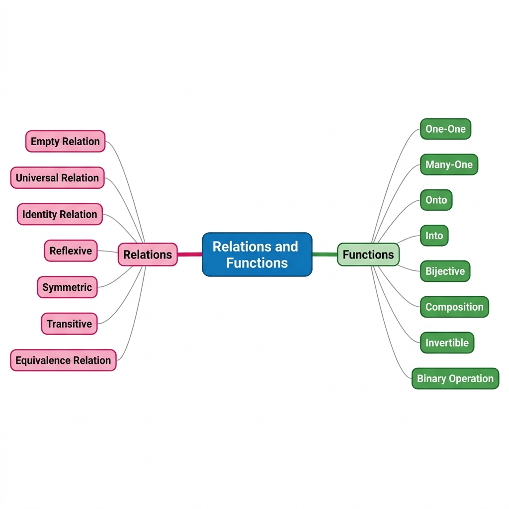
Fig 10.1 — Complete
Chapter Mind Map: Relations (left branch) and Functions (right branch)
| Concept |
Key Condition / Formula |
Boards Weightage |
| Total Relations from A to B |
$2^{mn}$ (where $m = |A|$, $n = |B|$) |
1 Mark MCQ |
| Equivalence Relation |
Reflexive + Symmetric + Transitive |
5 Marks |
| Equivalence Class $[a]$ |
$\{x \in A : (x,a) \in R\}$ |
Part of 5 Mark Q |
| Bijective Function |
One-One AND Onto; Range = Co-domain AND unique pre-images |
5 Marks |
| Total Functions (finite sets) |
$n^m$ |
1–2 Marks MCQ |
| Total One-One Functions |
$^nP_m$ (if $n \geq m$) else $0$ |
1–2 Marks MCQ |
| Total Onto Functions ($n=2$) |
$2^m - 2$ |
1–2 Marks MCQ |
| Invertible Function |
Bijective only; $f^{-1}(x)$ found by solving $y=f(x)$ for $x$ |
5 Marks |
| Composition $g \circ f$ |
$(g \circ f)(x) = g(f(x))$; Range of $f \subseteq$ Domain of $g$ |
3–5 Marks |
| Binary Operation |
$*: A \times A \to A$; check closure, identity, inverse, commutativity, associativity
|
5 Marks |
12. Previous Year Board Exam Questions (CBSE)
PYQ 1 — CBSE 2023 (5 Marks)
Q: Check whether the relation $R$ defined on the set $A = \{1, 2, 3, 4, 5, 6\}$
as $R = \{(a,b) : b = a + 1\}$ is reflexive, symmetric, or transitive.
Refer to Practice Problem 2 above. $R$ is none of the three.
PYQ 2 — CBSE 2022 (5 Marks)
Q: Show that the relation $R$ in $\mathbb{R}$ defined as $R = \{(a,b) : a \leq
b\}$ is reflexive and transitive but not symmetric.
Reflexive: $a \leq a$ ✓ for all $a \in \mathbb{R}$. → Reflexive.
Not Symmetric: $1 \leq 2$ but $2 \not\leq 1$. So $(1,2) \in R$ but $(2,1)
\notin R$. → Not Symmetric.
Transitive: If $a \leq b$ and $b \leq c$, then $a \leq c$. ✓ → Transitive.
PYQ 3 — CBSE 2020 (5 Marks)
Q: Let $A = \{-1, 0, 1, 2\}$, $B = \{-4, -2, 0, 2\}$ and $f, g: A \rightarrow
B$ be defined as $f(x) = x^2 - x$ and $g(x) = 2|x-\frac{1}{2}|-1$. Are $f$ and $g$ equal?
Justify.
Compute $f$ and $g$ at each element of $A$:
$f(-1) = 1+1=2$, $g(-1)=2|\!-3/2\!|-1=2(3/2)-1=3-1=2$. ✓
$f(0) = 0-0=0$, $g(0)=2|{-1/2}|-1=1-1=0$. ✓
$f(1) = 1-1=0$, $g(1)=2|1/2|-1=1-1=0$. ✓
$f(2) = 4-2=2$, $g(2)=2|3/2|-1=3-1=2$. ✓
Since $f(x) = g(x)$ for all $x \in A$, $f$ and $g$ are equal functions.
PYQ 4 — CBSE 2019 (3 Marks)
Q: If $f: \mathbb{R} \rightarrow \mathbb{R}$ is given by $f(x) =
(3-x^3)^{1/3}$, find $f \circ f(x)$.
$f(f(x)) = f((3-x^3)^{1/3})$
$= \Big(3 - \big((3-x^3)^{1/3}\big)^3\Big)^{1/3}$
$= \big(3 - (3-x^3)\big)^{1/3}$
$= (3 - 3 + x^3)^{1/3}$
$= (x^3)^{1/3} = \mathbf{x}$
So $f \circ f = I$ (identity function) → $f$ is its own inverse.
PYQ 5 — CBSE 2018 (5 Marks)
Q: Let $*$ be defined on $\mathbb{Q}^+$ (positive rationals) by $a * b =
\dfrac{a+b}{2}$. Is $*$ a binary operation? Is it commutative? Associative? Find identity
element if it exists.
Binary Operation: For $a,b \in \mathbb{Q}^+$, $\dfrac{a+b}{2} > 0$ and
rational → $a*b \in \mathbb{Q}^+$. ✓
Commutative: $a*b = \dfrac{a+b}{2} = \dfrac{b+a}{2} = b*a$. ✓
Not Associative: $(a*b)*c = \dfrac{a+b}{2}*c = \dfrac{\frac{a+b}{2}+c}{2} =
\dfrac{a+b+2c}{4}$.
$a*(b*c) = a*\dfrac{b+c}{2} = \dfrac{a+\frac{b+c}{2}}{2} = \dfrac{2a+b+c}{4}$. These are
unequal in general. → Not Associative.
Identity: $a*e=a \Rightarrow \dfrac{a+e}{2}=a \Rightarrow a+e=2a
\Rightarrow e=a$. But identity must be a fixed element independent of $a$. So no
identity element exists.
🎯 Board Exam Checklist — Before You Write
For Proving Equivalence Relation (5 Marks):
- State all three properties to check.
- Prove each one formally, not just "it is obvious."
- Write "Hence $R$ is an equivalence relation" at the end.
For Proving Bijective Function (5 Marks):
- Prove One-One: "Assume $f(x_1) = f(x_2)$, then show $x_1 = x_2$."
- Prove Onto: "Let $y \in B$, find $x \in A$ such that $f(x) = y$, verify $x \in$ domain."
- State: "Since $f$ is one-one and onto, $f$ is bijective."
For Finding Inverse (3–5 Marks):
- Prove bijectivity first (or state "clearly $f$ is bijective").
- Set $y = f(x)$, solve for $x$, write $f^{-1}(y)$, replace $y$ with $x$.
All Key Formulas — One Place
| Quantity |
Formula |
| Total Relations from A to B |
$2^{mn}$ |
| Total Functions from A to B |
$n^m$ |
| Total One-One Functions |
$^nP_m = \frac{n!}{(n-m)!}$ (if $n \geq m$), else 0 |
| Total Onto Functions ($|B|=2$) |
$2^m - 2$ |
| Total Bijective Functions |
$n!$ (if $m=n$), else 0 |
| Composition |
$(g \circ f)(x) = g(f(x))$ |
| Reversal Rule for Inverse |
$(g \circ f)^{-1} = f^{-1} \circ g^{-1}$ |
| Congruence Modulo $n$ |
$a \equiv b \pmod n \iff n \mid (a-b)$ |
| Equivalence Class |
$[a] = \{x \in A : xRa\}$ |